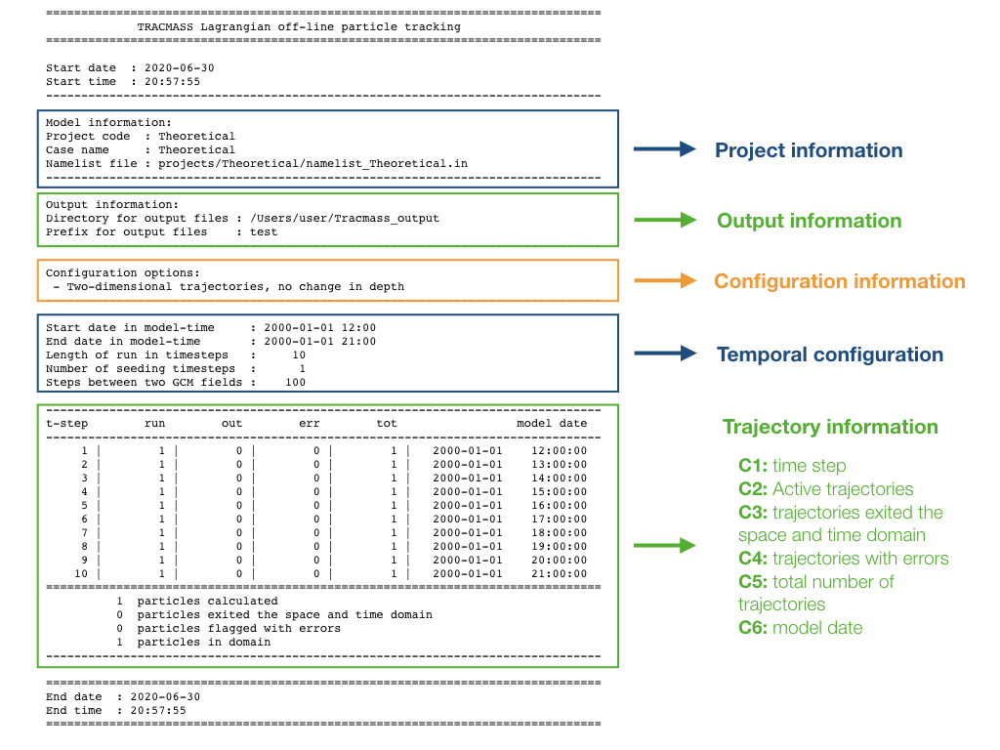

The present chapter will describe the output from TRACMASS.
Output (terminal)
The amount of information printed by TRACMASS can be modified by increasing the log_level. The default value of verbose provides a short summary of the initial configuration. At every time step TRACMASS prints a summary of the number of trajectories.

Output files
Depending on the initial configuration of the run, different files will be created. This is a summary of the output files of TRACMASS and the information they contain.
ini, run, and out files
These three files contain information regarding the trajectory:
- ini contains information of the seeding position and time of all trajectories.
- run contains all the positions of all the trajectories
- out contains information of the last position and time when it leaves a domain or the time exceeded.
The number of columns depends on both the time format (timeformat) and the number of tracers (numtracers). These are the variables stored in any of the three files:
- Column 1: trajectory number (ntrac)
- Column 2: position in the zonal direction (x)
- Column 3: position in the meridional direction (y)
- Column 4: position in the vertical direction (z)
- Column 5: transport of the trajectory (subvol)
- Column 6: seconds from the beginning of the simulation (timeformat = 0), or time fraction of the simulation (timeformat = 1).
- Column 7: label linked to the boxface of the gridbox (boxface)
- Column 8+: tracer value at the position of the trajectory (if l_tracer is TRUE).
If timeformat= 2 columns 6-9 are reserved to dateYear, dateMon, dateDay and dateHour. The boxface can be found at column 10, and tracer values can be found from column 11 onward.
rerun file
The rerun file contains information about the trajectories that exited through the domains defined by kill_zones.F90. This file is read to rerun the code or to compute offline streamfunctions. It consists of three columns:
- Column 1: trajectory number (ntrac).
- Column 2: kill zone flag (0 for time exceeded, 1 for trajectories reaching surface, 2 - for the criterias defined in kill_zones.F90).
- Column 3: number of times information of the trajectory has been saved in an output file.
psixy, psiyz, psiyr, and psirr files
If stream functions are computed, six files (three if l_tracer is deactivated) are created where the output is stored.
| Case | Number of columns | Number of rows |
| psixy | imt | jmt x 21 |
| psixz | imt | km x 21 |
| psiyz | jmt | km x 21 |
| psixr | imt | mr x 21 x numtracers |
| psiyr | jmt | mr x 21 x numtracers |
| psirr | mr | mr x 21 |
where mr is the number of bins in the tracer space (by default set to 501).
div file
If tracer divergences are computed (l_divergence is activated) a single file is created where all the divergence fields are stored.
| Number of columns | Number of rows |
| imt | jmt x 20 x numtracers |